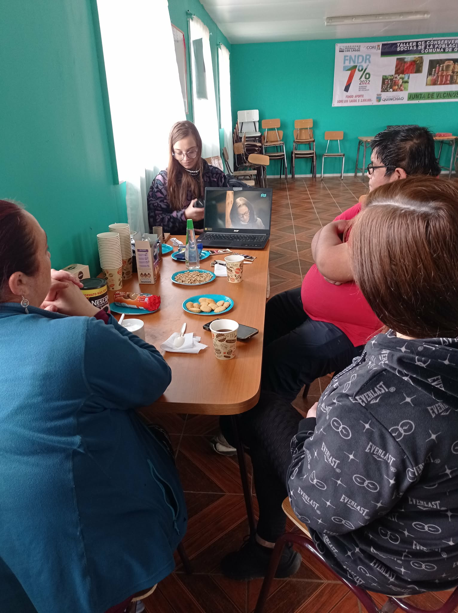

Experiencias y procesos comunitarios
Este espacio reúne registros de los talleres realizados junto a mujeres portadoras de saberes tradicionales en la comuna de Quinchao, Isla de Chiloé. A través de estas actividades se fortalecen prácticas de memoria, identidad cultural, transmisión intergeneracional y valorización del patrimonio inmaterial del territorio.
Galería de talleres
